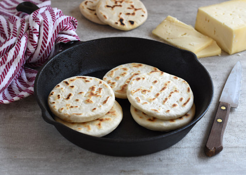

Churrascas

Description
Churrascas is a popular sort of bread, with his origin in the mapuche culture's, at south of chile
Ingredients
- 300 gr harina sin polvos de hornear
- ¼ cucharadita de Polvos de Hornear Gourmet
- 1 cucharadita de Sal de Mar Gourmet
- 30 gr de manteca o margarina, derretida
- 160 a 180 ml de agua tibia
Steps
- Poner la harina, Polvos de Hornear y Sal de Mar en un bol. Agregar la manteca derretida y mezclar con las manos hasta integrar.
- Ir de a poco agregando el agua tibia necesaria, amasando hasta tener una masa blanda.
- Tapar la masa y dejar reposar 30 minutos.
- Dividir la masa en 8 porciones y dar forma de bolita a cada porción.
- Formar los panes, aplastando las bolitas, hasta tener un pan chato de unos 8 cm de diámetro.
- Calentar una sartén, idealmente de fierro (también se pueden cocinar a la parrilla).
- Cocinar los panes por ambos lados hasta que estén dorados y se vean cocidos.
- Servir inmediatamente con queso de cabra o queso mantecoso.
Back